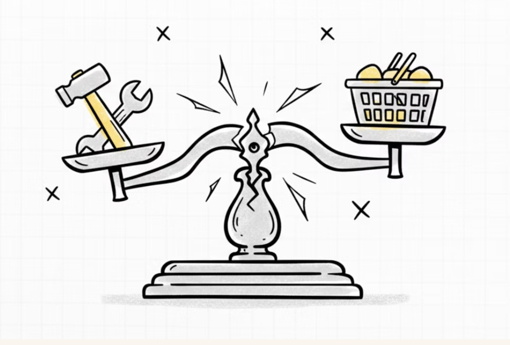
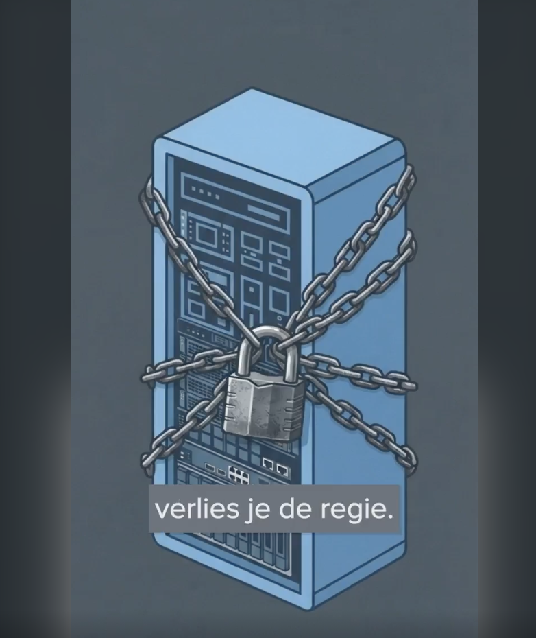
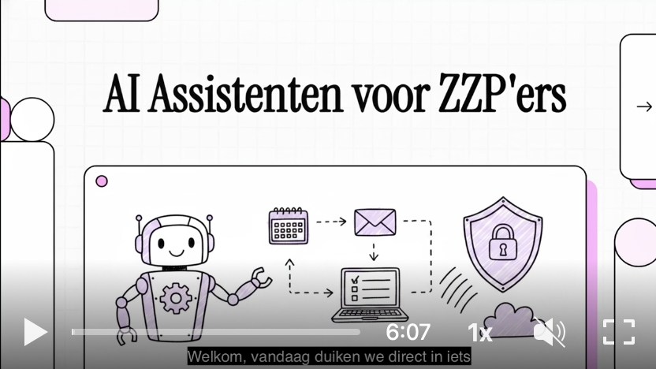
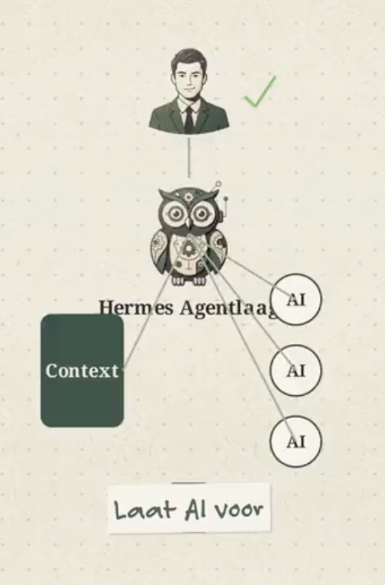
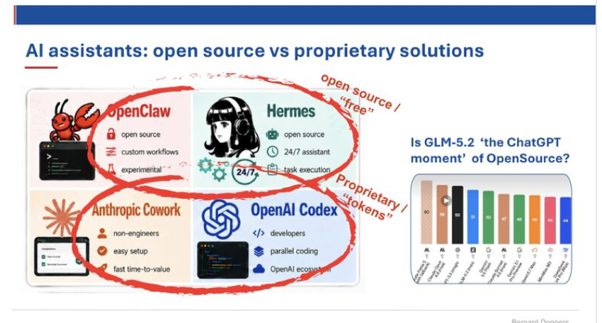
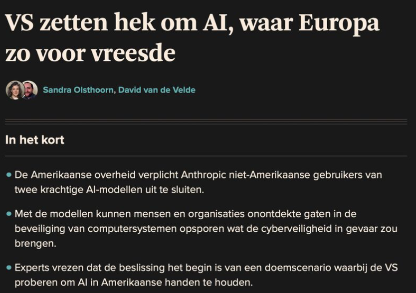
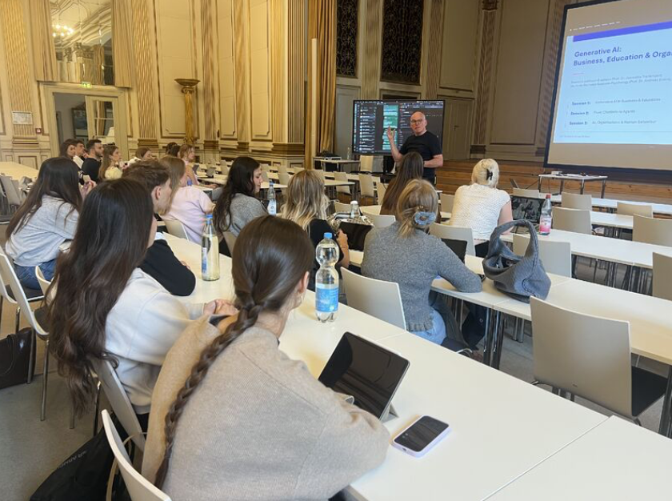

De duurste AI-fout voor ZZP'ers van 2026
AI-budgetten exploderen terwijl het rendement onduidelijk blijft. Bernard legt uit hoe je met een doordachte strategie de valkuilen van agentic AI vermijdt.
Ik help ondernemers een persoonlijke AI-agent praktisch in te zetten. In mijn eigen bedrijf heb ik een productiviteitsstijging van een factor 10 weten te realiseren door op een slimme manier AI in te zetten voor routinematige processen. Systemen zoals OpenClaw en Hermes leren jouw gewoontes en worden over tijd een nieuw Operating Systeem voor je activiteiten, maar wel Open Source, dus zonder afhankelijkheid van Big Tech. Inmiddels heb ik 3 digitale collega's in het team (Eva, Felix en Sophie) die helpen bij dagelijkse werkzaamheden.
Meer dan 25 jaar ervaring in C-level functies bij multinationals zoals Philips, als ondernemer in e-commerce, en nu als docent International Business & AI aan TIO Business School. Bernard vertaalt complexe AI-ontwikkelingen naar praktische ondersteuning voor zelfstandigen.
Lees ook de laatste blogs en LinkedIn-posts van Bernard beneden.

AI-budgetten exploderen terwijl het rendement onduidelijk blijft. Bernard legt uit hoe je met een doordachte strategie de valkuilen van agentic AI vermijdt.

Hoe een Hermes-agent anders is dan ChatGPT. OpenClaw-experimenten met tokenkosten, lock-in en autonomie.

Van keywords naar context. Van klikken naar conversaties. AI maakt marketing weer menselijker.

Perplexity Comet vs ChatGPT Atlas — agentic browsers die voor jou zoeken, lezen en samenvatten.

Waarom AI zo moeizaam landt in bedrijven. Praktijkervaringen met verandermanagement en AI-strategie.

Drie praktische video tutorials. Agentic browsing verandert zoekgedrag — handig voor research.

Van theorie naar praktijk. Een stappenplan voor AI-implementatie met Kotter 8-stappenmodel en praktijkcases.

Een toegankelijke samenvatting van belangrijkste AI-inzichten en een oproep tot actie voor onderwijs en bedrijfsleven.

Menselijke creativiteit, empathie en kritisch denken aangevuld met AI. Een roadmap voor organisaties en professionals.

Mitko Vasilevs quote over vendor lock-in is ook relevant voor MKB en ZZP. Bernard met een korte NotebookLM phone commercial hierover.

ZZPagent en MKBagents gebouwd in 3 weken met open source Hermes. 13.753 impressies op het verschil tussen chatbot en autonome agent.

AI-agents, open source Hermes, en waarom vendor lock-in gevaarlijk is voor ondernemers. Praktische inzichten voor zelfstandigen.

GLM-5.1, DeepSeek V4, GPT-5 Codex — de strijd gaat niet alleen over kwaliteit maar over kosten, controle en workflow-fit.

Europese AI-soevereiniteit, NAVO versus technologie, en hoe Europa binnen 10 jaar autonoom kan worden met kenniseconomie.

Lecture in the historic Concert Hall of the Siemens Villa over AI literacy, agents en de toekomst van werk aan studenten van BSP.